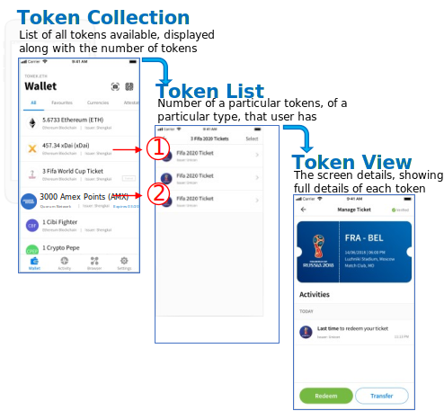
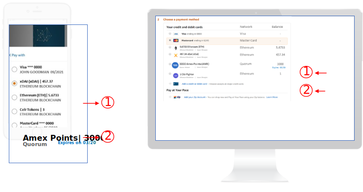

A Card can have two ways of displaying: a View and an
Item-View. You can think of the latter as a mini-version of the former. The reason it is
called Item-View, not mini-View, is that it is usually used in an itemised list. In
TokenScript both are defined in the <card> element.
This table listed the typical content of View and ItemView for each type of cards.
When used in
Typical content of a View
Typical Content of an Item-View
Token Card
Typically a detailed view of token attributes.
The most important information about the token. Take a DeFi token for
example, an ItemView might only have balance and status (e.g. health factor in
the case of AAVE token).
Activity Card
Detailed explanation of the activity.
An at-a-glance view of the activity.
Action Card
Typically, a form where users can type information.
A preview of such a form. ItemView of an ActionCard is not often used and
usually not defined.
View and Item-View of an Token Card
Often, for a TokenCard card, an Item-View is used first, and when the user clicks it,
he gets to see the full view. It is almost always the case in user's wallet.
Figure 1. Item-View and View used in wallet. In AlphaWallet, a user clicks at FIFA ticket token collection and a list of
tokens are present through ItemViews. If they clicks the ItemView of a Token,
they sees the View of that token.

However, on a web page, its web developer can design where and whether Item-View or
View should be used. In the below example, Item-Views of 2 Tokens (TokenCard) is
used for user to choose which token to use for the payment. When the user chooses a
Token, what opens is the "Pay" ActionCard, not the Token Card. The View of a TokenCard is unused at all. Figure 2. Item-View used on a website during checkout. Web developer can decide whether or not ItemView or View is used on their
website, and what happens if the user clicks them.
